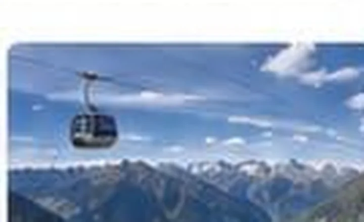
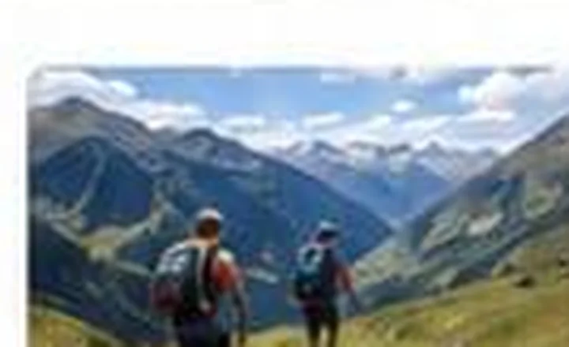
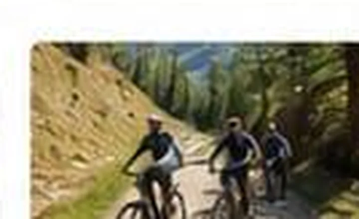
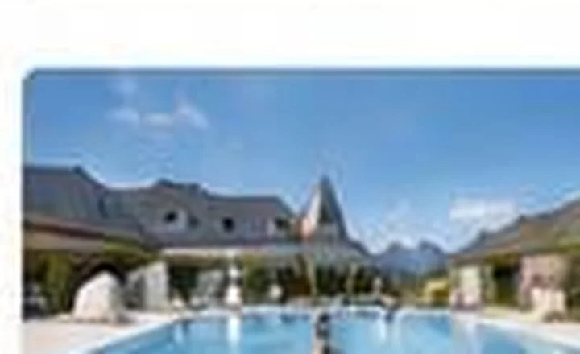
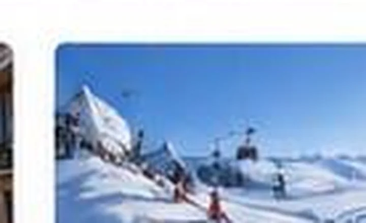
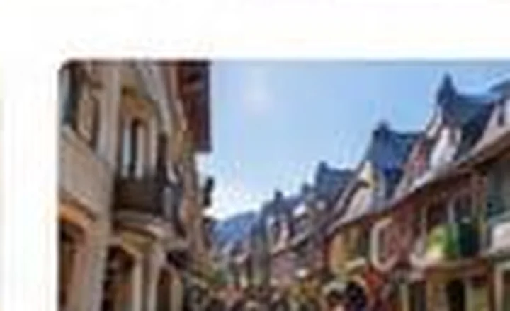

⌂
Equipamientos
- Cocina equipada: horno, microondas y lavavajillas
- Cafetera, hervidor y tostadora
- Lavadora y secador de pelo
- TV y Wi-Fi
- Aparatos de raclette y fondue
- Taquilla para esquís
Saint-Lary-Soulan · Pirineos franceses
Explora el apartamento estancia por estancia y descubre sus espacios antes de tu estancia.
Un apartamento de 52 m² pensado para alojar hasta 4 personas en pleno corazón de Saint-Lary-Soulan.
Dos dormitorios, un altillo y una acogedora zona de estar crean una base cómoda para disfrutar de la montaña tanto en verano como en invierno.
En pleno valle de Aure, Le Cocon de Saint-Lary es un punto de partida ideal para disfrutar de los Pirineos franceses durante todo el año. Esquí, lagos de montaña, senderismo, BTT, actividades de aguas bravas, bienestar y vida de pueblo forman parte de la experiencia alrededor de Saint-Lary-Soulan.

Accede a las zonas de montaña desde el pueblo y disfruta del dominio esquiable de Saint-Lary para esquiar y practicar snowboard.
Descubrir Saint-Lary en invierno →
Descubre los lagos de Orédon, Aubert, Aumar, Oule o Bastan y uno de los grandes espacios naturales de los Altos Pirineos.
Preparar una salida a Néouvielle →
A pie, en bicicleta, en el agua o en el aire, el valle de Aure ofrece numerosas actividades de montaña para disfrutar durante la estancia.
Ver actividades outdoor →
Disfruta de una pausa de bienestar en Sensoria Rio, en Saint-Lary-Soulan, o descubre Balnéa en Loudenvielle según sus condiciones de apertura.

Paseos familiares, rutas de montaña y grandes paisajes pirenaicos permiten descubrir Saint-Lary y sus alrededores a tu ritmo.
Encontrar una ruta →
Pasea por el pueblo y disfruta de sus comercios, restaurantes y ambiente entre dos jornadas de montaña.
Descubrir Saint-Lary →Esquí, snowboard, nieve y acceso a la estación desde Saint-Lary-Soulan.
Senderismo, Néouvielle, BTT, ciclismo y actividades outdoor en el valle de Aure.
Bienestar, patrimonio, gastronomía y descubrimiento de los pueblos pirenaicos.
Consulta la disponibilidad y reserva directamente.